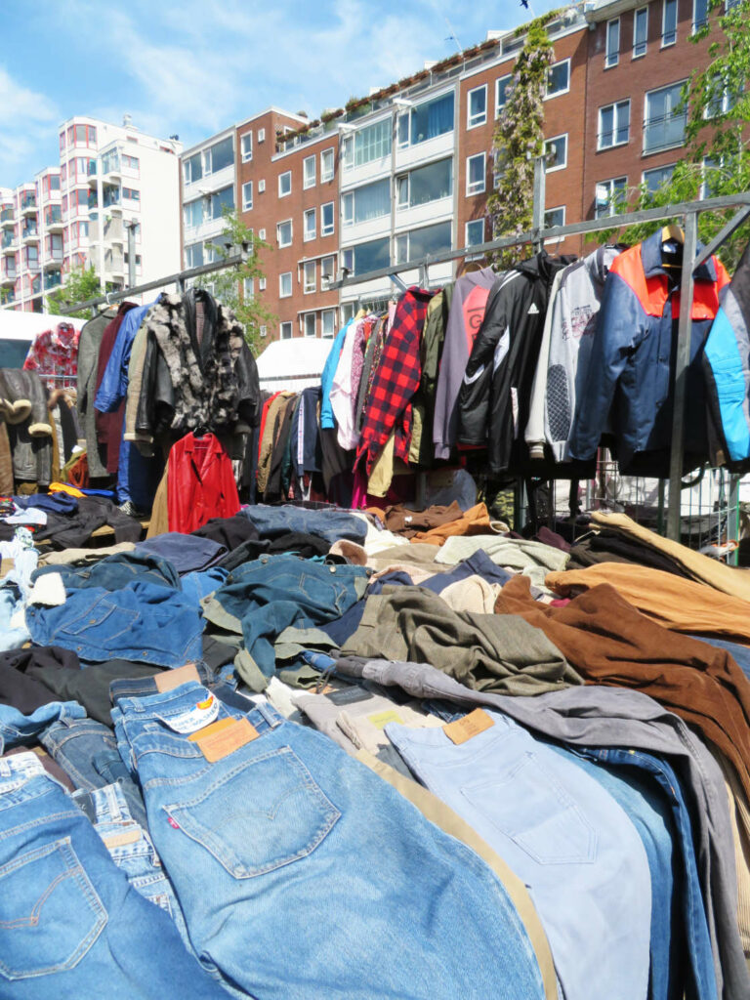

Bueno, ahora me toca ponerme a escribir vainas a lo que caiga porque la verdad no se me ocurrre mucho.
Aquí lo que queremos es probar un párrafo como tal dentro de la página web. También podemos añadir saltos de línea.
Después de eso, aunque hayamos añadido un salto de línea pues igual seguimos en el mismo párrafo. Y hasta aqui llegamos, más en la próxima.
La siguiente movida es que vamos a ponerle enfasis a algunas palabras. Vamos a meterle perrenque a esa palabra.
Que mejor dicho usted la lea y piense: "Que hp palabra tan fuerte". ¿Sí pilla?

Ahora nos vamos a volver más pros y vamos a combinar imagen con hipervínculo. Abra pues esos ojos para que no se lo pierda.
Dele click a la imagen para que consiga una ropita del mercado de las pulgas.

¿Sí le gustó algo o no?
Ahora vamos a añadir una tablita bien azarosa, échele ojo pues.
| Menú | ||
|---|---|---|
| Almuerzo | Comida | |
| Bandeja Paisa | Sudado de pollo | Lunes |
| Arroz con pollo | Lentejas, arroz y carne | Martes |
| Ajiaco | Arroz mixto con chuleta | Miércoles |